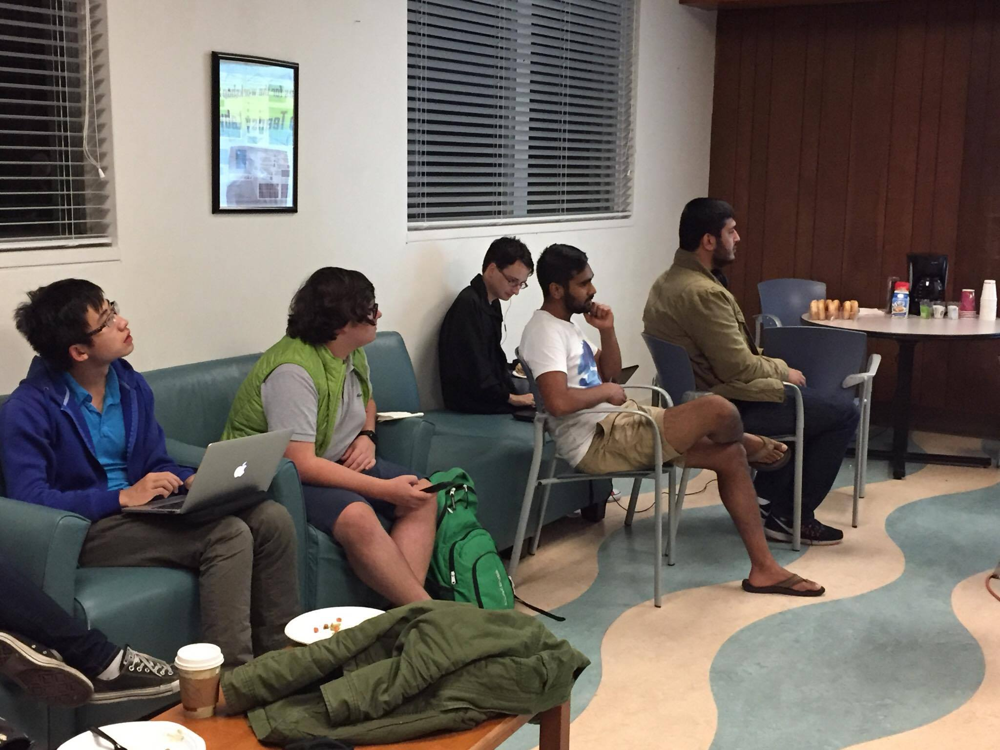
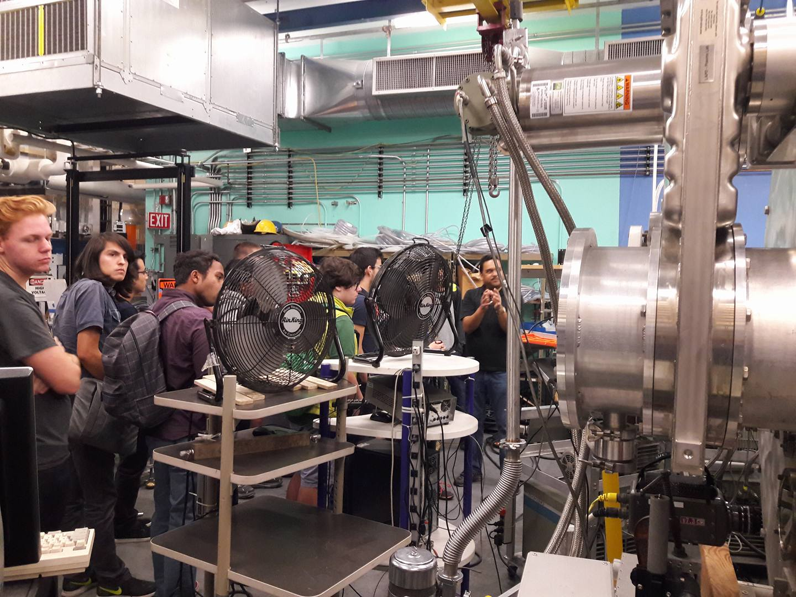
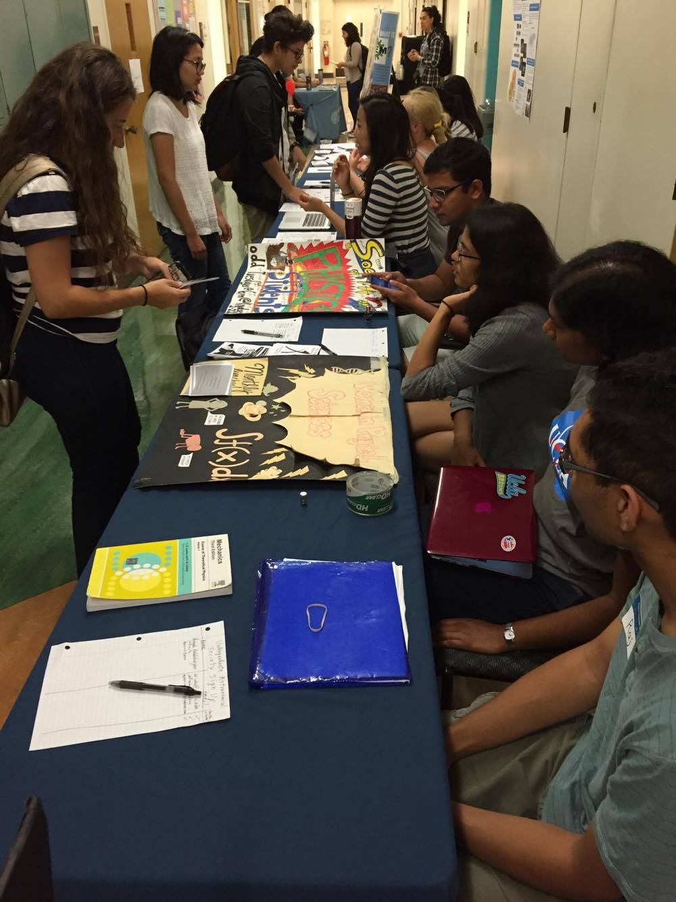
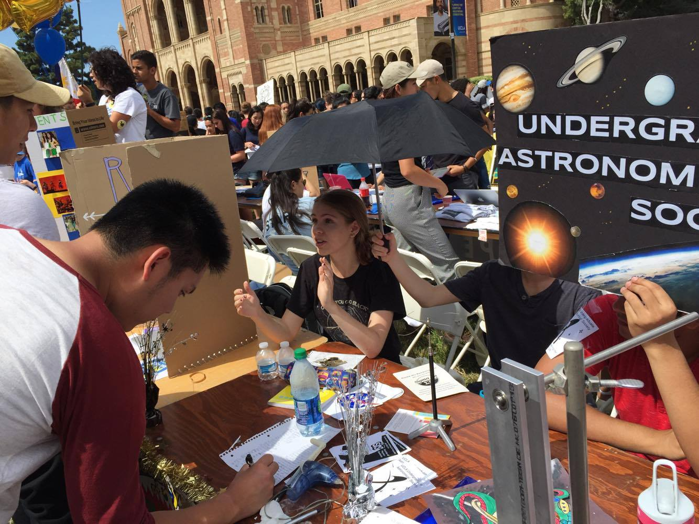

SPS Updates & Announcements
[SPS Fall Meeting] Week 9: Arduino Workshop Part 2
Nov 23, 2016
Time to enter the labyrinth!

This week at Society of Physics Students, students got to program a robot to navigate some treacherous mazes! Students are encourgaed to compete with friends to see whose code brings their robot to the end first! Challenge modes available for those eager to test their coding skills to the limit! And Happy Thanksgiving everyone (fyi turkeys taste yummier when cooked by eletrocution)!
[SPS Fall Meeting] Week 7: Arduino Workshop Part 1
Nov 15, 2016
Ever wanted to learn how to program a robot to navigate a maze?
Now you can with Arduino, an open-source electronics platform that allows you to code commands to control motors, power LEDs, and more! This week, we went over the basics of Arduino hardware and how servo motors work, and we also showcased our Whack-a-Mole circuit game from last spring!
This is part 1 of our 2-part Arduino Workshop, to be continued in Week 9!
SPS Fall Meeing Week 3: Plasma Lab tour
Nov 9, 2016
Featuring the Large Plasma Device (LAPD)!
This week SPS went to the Basic Plasma Science Facility in Westwood. Thanks Dr.Carter for the presenation and the lab tour!
Read MoreStart of Fall Quarter: EAF and URC Fairs
Oct 20, 2016
Enorumous Activities Fair and Undergrad Research Center (URC) Fair.
